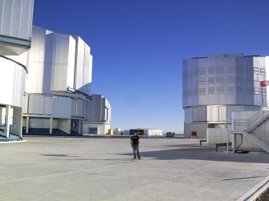

I am versatile and data-driven engineer skilled in mathematical modeling and process analytics, with in-depth expertise in computer vision and data science. My background is in applied physics, optics and electronics. My research interests include Artificial Intelligence, Machine Learning, Space Robotics, Image processing, GANs & Big Data Analytics.
I finished my Bachelor in Physics in 2007 where i attended courses of Quantum Mechanics, Optics, Spectroscopy, Mechanical Statistic, Solid-state physics among several mathematical courses.
I graduated in Physics Engineering in 2010, where I had a strong formation in Electronics & Digital Electronics, Sensors and Image Processing.
My thesis was in Machine Learning for Image Processing developing automatic algorithm with the use of SVMs in order to classify images.
I continue skilling up via e-learning in order to keep an up to date knownledge of the current technologies in Machine Learning, IoT, electronics and programming languages ...